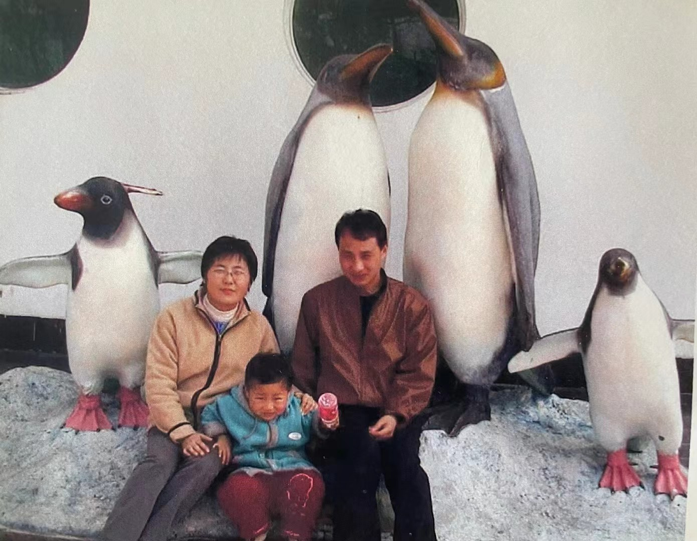
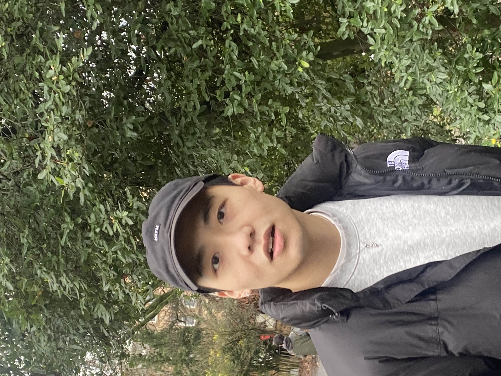
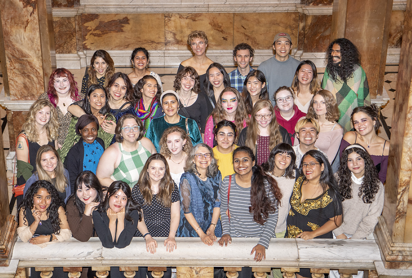

I was born in the final year of the last century in Suzhou, China — a place often romanticized as the "Venice of the East." As a member of the final generation born under the One-child policy, I carry a distinct perspective on family dynamics. This socio-political backdrop means I grew up without the intrinsic concepts of "sharing" or "sibling cooperation" that dominate many childhood narratives. This unique upbringing has profoundly influenced my critical lens and emotional reception of children's literature, allowing me to question structures of agency and collectivism from an outsider's perspective.
I have always been drawn to literature. My friends and parents often teased me, saying I failed to meet the stereotype of the "Asian student" because I was utterly hopeless at science. I still vividly remember high school: while I could effortlessly score above 90 in Politics and History, my record in Chemistry was a triumphant 23 out of 100.

During my undergraduate studies, I chose Asian Language and Literature as my major, focusing primarily on the intersection of Korean literature and Sinology. I was particularly fascinated by the reception of Chu Ci (The Songs of Chu) in the Korean Peninsula, especially during the Joseon Dynasty. It is a captivating anthology of romantic and fantastic imagination, filled with shamans and spirits.
Following that, I moved to Glasgow to pursue a Master's in Fantasy Literature. At the time, I focused on the concept of Xianxia in Chinese fantasy and how it differs ontologically from "Magic" in European traditions. Gradually, my interest shifted towards world-building in High Fantasy, particularly in Young Adult literature.

After graduation, I joined the Erasmus Mundus programme CLMC (Children's Literature, Media and Culture). This journey allowed me to bounce between Scotland, Denmark, and Poland. It was an exhausting and anxious time — visas are a perpetual headache for a non-EU citizen. However, amidst the chaos, I developed a deeper interest in post-apocalyptic narratives. My thesis explored the construction of post-apocalyptic worlds in The Hunger Games and other contemporary works.

While studying in Poland, I met my wife, Ms. Sofia. I had originally planned to stay in Poland, but luck intervened, and I received an offer to move to the University of Padova to pursue my doctoral research under the supervision of Prof. Marnie Campagnaro.
Now, I am here in Padova, taking it one day at a time, exploring the multimodal ways in which we navigate the uncertainties of our world.